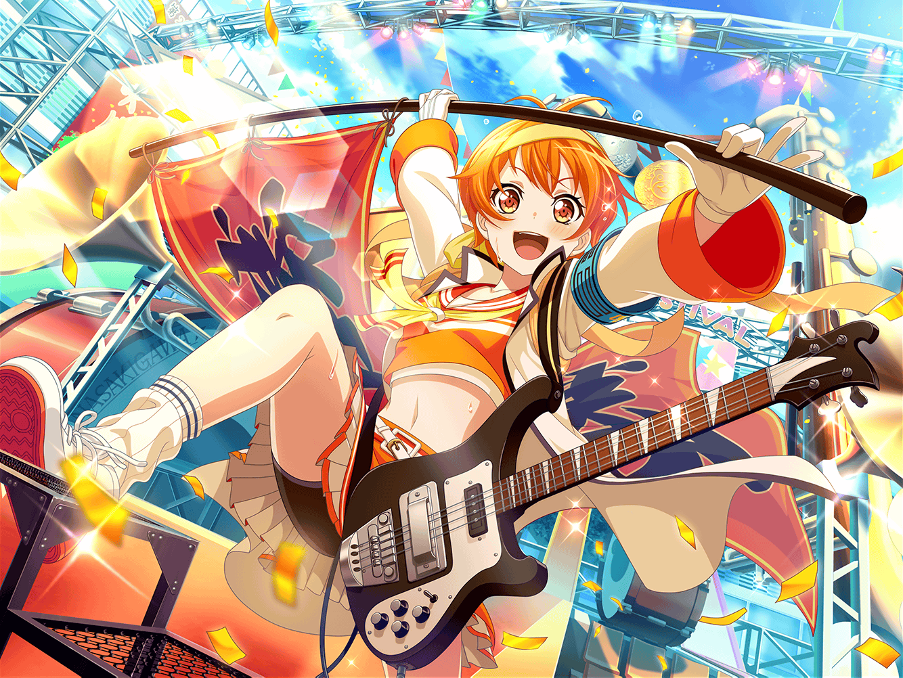

駅前
はぐみ
あー！
{{userName}}さんだー！
はぐみ
……どーんっ！
はぐみ
えへへ、どう？ ビックリした？
はぐみタックル、すごいでしょ！
はぐみ
ん？ はぐみはお買い物の途中だよ！
体育祭で、はぐみが活躍したから、ご褒美に
とーちゃんが好きなもの買っていいって、おこづかいくれたんだ！
はぐみ
……うん、そうだよ！
この間、はぐみ達の学校で、
体育祭があったんだ！
はぐみ
彩先輩がチアガールやって、
すっごくかわいかったんだよ〜！
はぐみ
あとね、あとね、
あーちゃんがあれやったんだ！
はぐみ
我々、選手いちどーはってやつ！
なんだっけ、選手せんせー？
はぐみ
それでね、あとは、
はぐみとかーくんが徒競走で一緒に走ったり！
はぐみ
おたえとみーくんが
玉入れやったり！
はぐみ
あとね、はぐみ赤組だったんだけど
お昼を赤組のみんなで食べたんだ！
はぐみ
みんなのお弁当すごかったよー！
はぐみも気合い入れて作っていったんだ！
はぐみ
そうしたら、みんなに
ミッシェルのおにぎり、カワイイって言ってもらっちゃった！
はぐみ
正直言うと、体育祭が始まる前までは
あんまり楽しいとは思えなかったんだ……
はぐみ
はぐみって、運動は大好きなんだけど……
でも、勝負するっていうことがあんまり得意じゃなくて……
はぐみ
だってさ、勝てば嬉しいけど、負けるとくやしいでしょ！？
負けた相手のくやしそうな顔見たら……
勝っても笑顔になれないと思ってたから
はぐみ
思ってたっていうか……
はぐみは、実際そうだったんだ
はぐみ
でもね、今回の体育祭で
そうじゃないってことわかったの！
はぐみ
負けた方はくやしいだけじゃないってこと。
正々堂々と勝負した結果の負けって、
悪いことじゃないんだよね
はぐみ
負けたって得るものがあるって、
この前の体育祭で、はぐみわかったんだ！
はぐみ
もし、これから先……
前のはぐみみたいに勝負することに迷ってる人がいたら
そのことを伝えてあげようって思うよ！
はぐみ
くやしいだけじゃないんだよって、
ちゃんと教えたい！
はぐみ
はぐみね、実は最後の競技のリレーで
勝敗がつくの怖くて……
ギリギリまで悩んでたんだ
はぐみ
だって、そこではぐみが勝っちゃったら、
白組の人達を悲しませることになっちゃうでしょ？
はぐみ
でもね、みーくんとかかーくんの言葉聞いて、
真剣に走ろうって思ったの
はぐみ
はぐみ、決着つくのが嫌だから
今まで真剣勝負の大事さに気づけてなかったのかもね
はぐみ
でも！
今のはぐみは違うよ！
はぐみ
はぐみは今、すっごく燃えてるの！
どんな勝負でも手を抜かないで、全力でやる！
はぐみ
体育の時間の試合とか、
ソフトボールの試合とか！
はぐみ
そうじゃないと、相手に失礼だもん！
相手が真剣にやってたら、こっちも真剣じゃないとね！
はぐみ
だから今のはぐみは、
勝つ時は思いっきり勝って、
負ける時は思いっきり負けたいんだ！
はぐみ
うん、負けることだって嫌じゃないよ！
だってみんなが全力でだした結果だもん
はぐみ
でも負けたら次は負けないように
今まで以上に頑張る！
はぐみ
スポーツだけじゃなくて、
バンドも全力でやるよ！
はぐみ
見に来てくれた人、
対バンの相手、スタッフさん……
はぐみ
そういう人達に、
失礼にならないようにしないとね！
はぐみ
何事も常に全力で。
勝敗を怖がらない
はぐみ
そう考えたら、
何もかもが楽しくなってきちゃった！
はぐみ
今週末ね、ソフトボールの試合があるの！
それも、はぐみ頑張っちゃうよ～！
はぐみ
絶対に手ぬかないで
ホームラン連発しちゃうぞ～！
はぐみ
えへへ、
はぐみのバットはすごいんだから！
はぐみ
どんな球だって打っちゃうんだよ！
はぐみ
今のはぐみに、怖いものなんて
何もないもん！
はぐみ
……って！
わわっ、話しすぎちゃったっ！
はぐみ
早く買い物行かないと
帰るの遅くなっちゃう！
はぐみ
とーちゃん怒ると怖いからなぁ
はぐみ
じゃあね！
はぐみ、ダッシュで買い物いってきまーす！